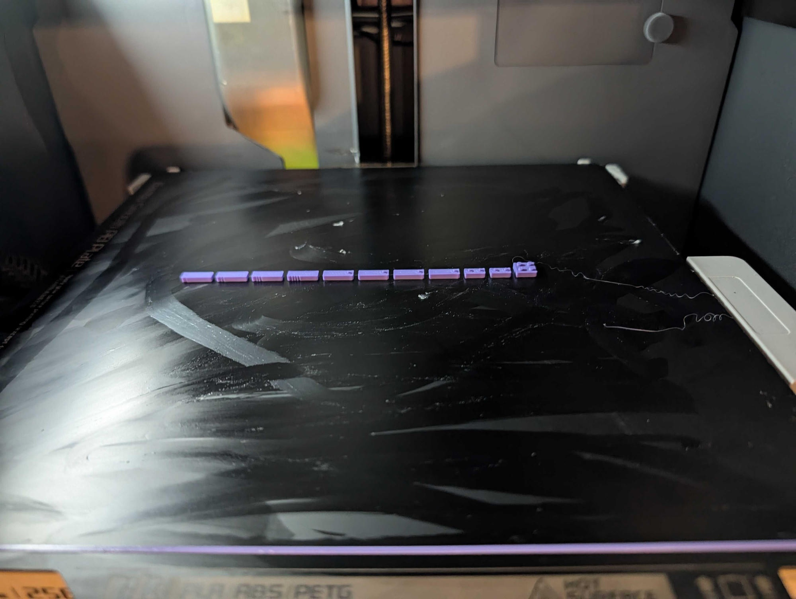

8 mm COMMON BLOCKS / MONA · COPILOT · DUCKY
持てる大きさから、
組み立てを考える。
微細なピンを数多く扱う方式から、
2×2・2×4などの共通ブロックへ。
約180 mmの3体を、組み立てやすさから見直します。
設計改訂の実装は承認済み。実物合格・印刷準備済みの意味ではありません。
現行版の公開記録を確認しています。旧版を新型の画像として代用しません。
版ごとの部品数・高さ・実物試験の状態を確認してから表示します。
全15案の実CG・動画・ネイティブCAD・組立データと、3体の比較画像を公開しています。個数倍率は完成寸法の倍率ではなく、新案の採用・全数印刷の承認でもありません。
顔・体形・丸みの再現を優先する約36 cm案は、別の未採用スタディです。現行r3の拡大コピーや正式な新版キットではありません。
CURRENT REVISION / ACTUAL NATIVE GEOMETRY
一周して見る。
一部品まで見る。
完成形・分解・積層・順序候補を切り替え、部品をクリック。
このビューアは閲覧専用です。CAD実行やプリンター接続はしません。
組立ビューアを開く
回転 / 視点 / 部品ID / 色・型別BOM / 3案切替
現行版のターンテーブル動画を見る 実ファイルが公開された版のみ
COMMON-PART DESIGN BASIS / NOT A MANUFACTURING STANDARD
細かさより先に、
一部品の大きさを。
8 mmピッチ、本体9.6 mm、プレート3.2 mmを設計基準に。
小さな盲穴と細径ピンではなく、開いた下面の壁・筒・リブで保持を検討します。
| 共通部品 | 基準となる本体寸法 | 状態 |
|---|---|---|
| 2×2 | 15.8 × 15.8 × 9.6 mm | スタッド込み11.4 mm・設計基準|
| 2×4 | 15.8 × 31.8 × 9.6 mm | スタッド込み11.4 mm・設計基準|
| スタッド / プレート | 直径4.8 mm・高さ1.8 mm / 本体厚3.2 mm | FDMでの嵌合・保持力は未検証
これは独立した試作の設計基準であり、LEGO公式の製造寸法・公差や互換保証ではありません。実際の採用型・寸法・数量は、その版のCADと部品表を参照してください。
SUPERSEDED / PHASE 1 + r2 HISTORY
以前の試作も、
履歴として残す。
{kind=link}
候補の記録を読み込んでいます。
細かいほど組み立てやすい、精度が高い、という意味ではありません。高さはいずれも設計上の値です。
Phase1のBalanced動画を見る 6 mm・履歴の3本
この3本は選定Fine / Chunkyやr2の動画ではありません。
FILES / NATIVE + EXCHANGE
画像だけでなく、
制作データごと。
Blender、FreeCAD、STEP / STL / 3MF、配置とBOM。
版とピッチを分け、個別ファイルのサイズ・SHA-256を公開しています。
FreeCADはZIPを展開してから。組立FCStdは同じパッケージ内の部品ライブラリーを相対参照します。フォルダー構成を変えずに開いてください。すべて試作・NOT_SLICEDです。

実物フィードバック / 2026-09-19EARLIER r2 / 2026-09-19 PHYSICAL TRIAL
試してわかった、
次に直すこと。
「小さくて作りにくい」
「穴がプラスチックで埋まっている」
これは旧4 mm試作の記録です。細かさだけでは、組み立てやすさにつながりませんでした。穴詰まりは超音波洗浄の前から起きていた、という追加報告も記録しています。原因はまだ特定していません。
0.2 mmノズル装着は事前に確認。実際のプロファイル・層高・材料銘柄や、条件別の保持力は未確定です。
写真10枚・動画・報告を読む →DESIRED PRINT OPTIONS / DISCUSSION
印刷方法も、選べるように。
「別々に印刷して後で組み立てる方法」と、
「最初からすべて印刷する方法」が希望されています。
「最初からすべて印刷する方法」：組立不要の一体造形か、別部品を同じプレートへ並べる一括印刷か、意図を確認中です。色別配置を用意しても、一体造形の希望確認や製造承認を意味しません。
これは今後の希望の記録です。組立ビュー用CADを一体印刷用や印刷準備済みとは扱いません。現行の課題を踏まえ、全数印刷は保留のままです。
DESIGN HISTORY / OPEN QUESTIONS
次は、「持ちやすさ」から。
外観の細かさと、
手に持つ一部品の大きさを、
別々に考える。
2026-09-20、8 mm基準の共通ブロックへ作り直す実装が依頼されました。旧4 mm細密・1.10 mmピンを維持する制約は、新方針と矛盾する部分について置き換えます。
設計の実装承認と、現物の製造承認は別です。約180 mmの外観の厳密な維持、市販LEGO互換、FDMでの成形・保持力は保証しません。公開画像・動画・CADは、各版の実生成物だけを使います。